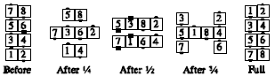

From columns: The #1 dancer in each column Peel Off (away from the other column) 180 degrees and walk forward as everyone else follows single file. Finishes in columns close together (requiring an adjustment at the end). If the caller gives a fraction, the number of 1/4s in the fraction indicates the number of dancers who do the Peel Off action, while the remaining dancers Extend once for each 1/4. The columns balance themselves, so that they are mutually centered. Thus, for Invert the Column 1/2: #1 does the Peel Off and #2 follows, forming parallel waves with the #3 and #4 dancers, who move up one spot.
